In-Class Exercise 2: Tableau Visualisation
1 Learning Outcome
An introduction on using Tableau to visualise data, and publish it on the website. You can access In-Class_Ex02 Tableau webpage here.
2 Getting Started
2.1 Importing the data
There are two ways to import the data. You can either drag the data source file into Tableau Window directly, or clicking on “file/ open/ data”
2.2 Viewing the Data
We can see that there are three sheets to choose from, which corresponds with the sheets in the data source file. We will first drag “Orders” into the main window.
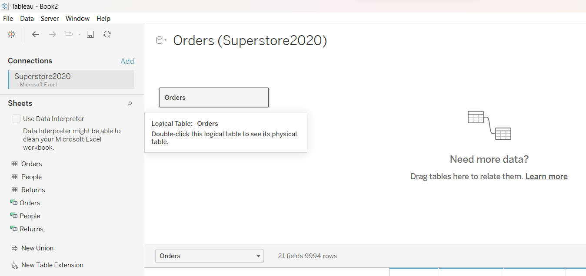
After that is done, there will be two tables being displayed, as shown below. On the left are the descriptors for the fields, while the right displays the observations.
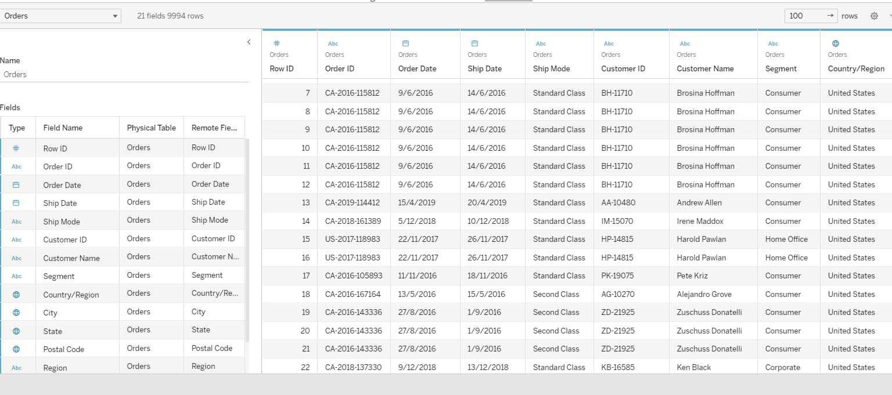
2.3 Establishing Relationships between Sheets
To establish a relationships between sheets, simply link them by dragging the sheets into the top window.
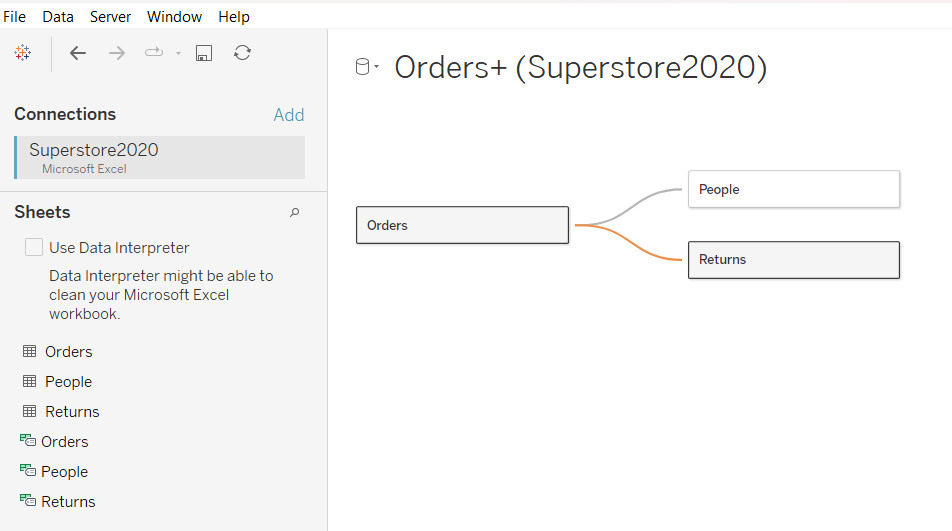
3 Exploring Tableau Functions
On the bottom left corner, there are three tabs denoting “New Worksheet”, “New Dashboard” and “New Story”. We will first explore the functions using the sheet.
3.1 Tables
3.1.1 Creating Tables
To create a table, first drag “Region” into the Columns and “Year” into Rows. After which, just drag “Sales” into the table itself, as follows:
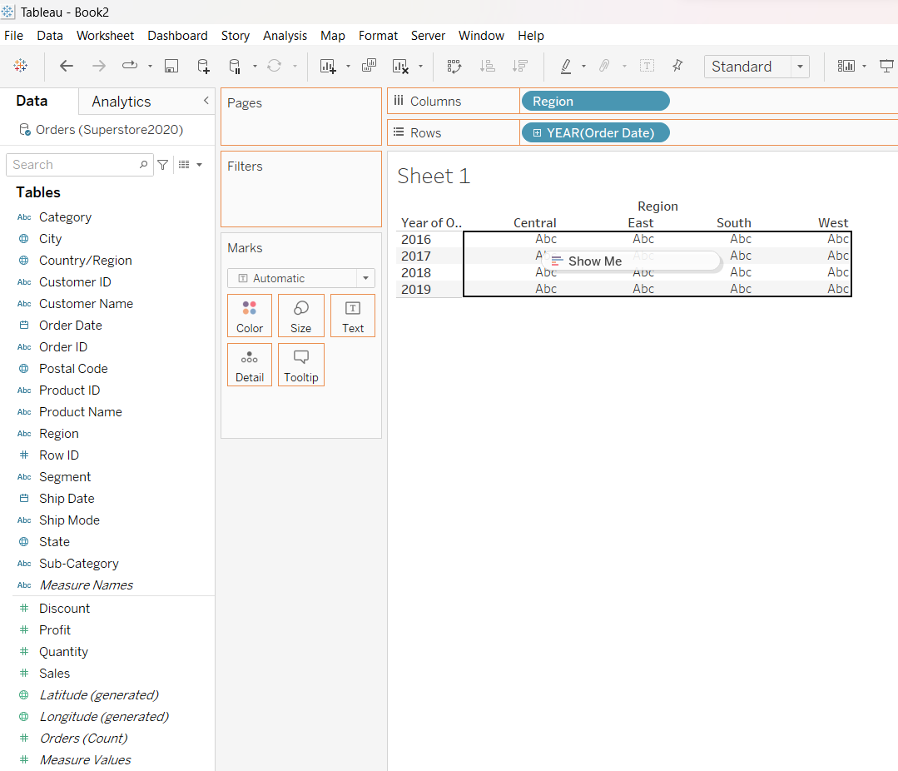
3.1.2 Computing Totals
To compute total, simply go over to the “Analytics Panel”, click on “Totals” and drag it over to either “Column Grand Totals”, “Row Grand Totals” or both.
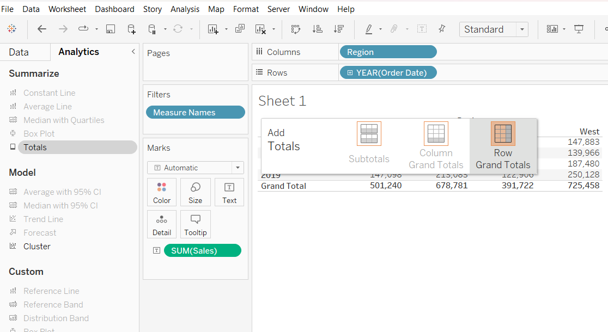
3.2 Graphs
First, you can create a graph by dragging the following variables into the rows and columns.
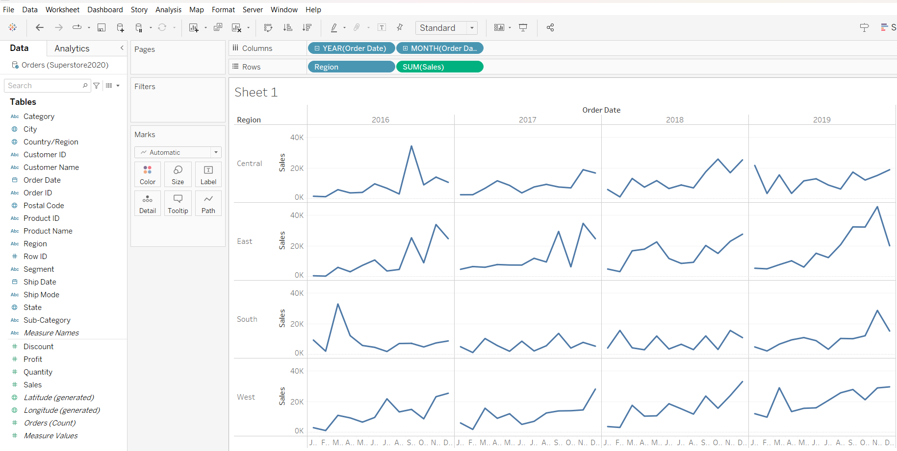
3.2.1 Adding Reference Line
To add a reference line, simply hover around the y-axis, right click and select “Add Reference Line”. Thereafter, on the pop-out box, you can select the various options for “Scope”, “Line” and “Formatting”.
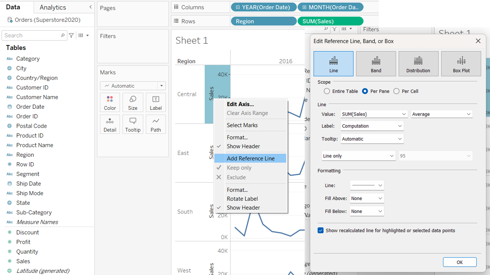
This is what the per pane for “Scope” looks like:
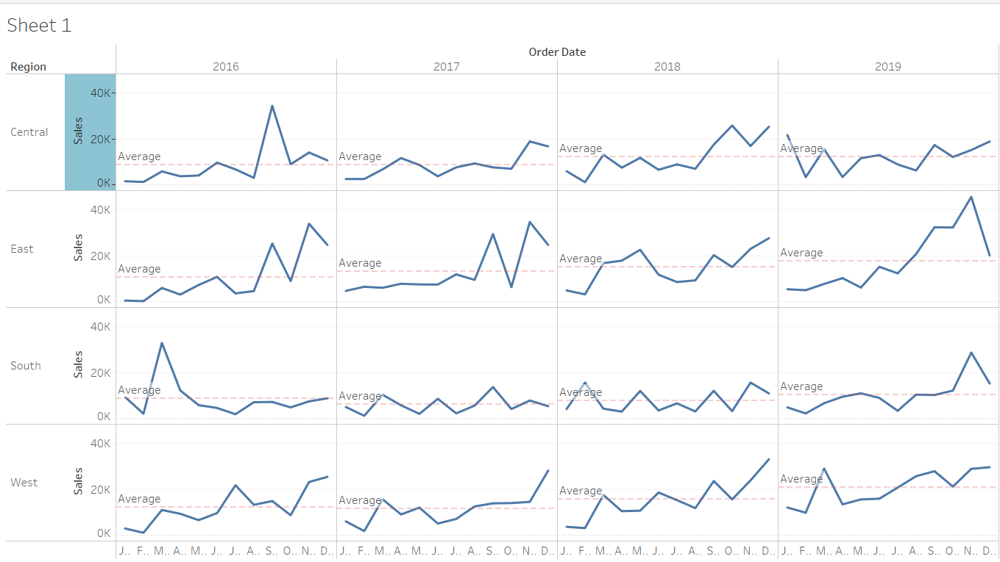
You can also customise your own reference line by selecting “custom” under “Line/ Label”, and typing in “Avg = <Value>”.
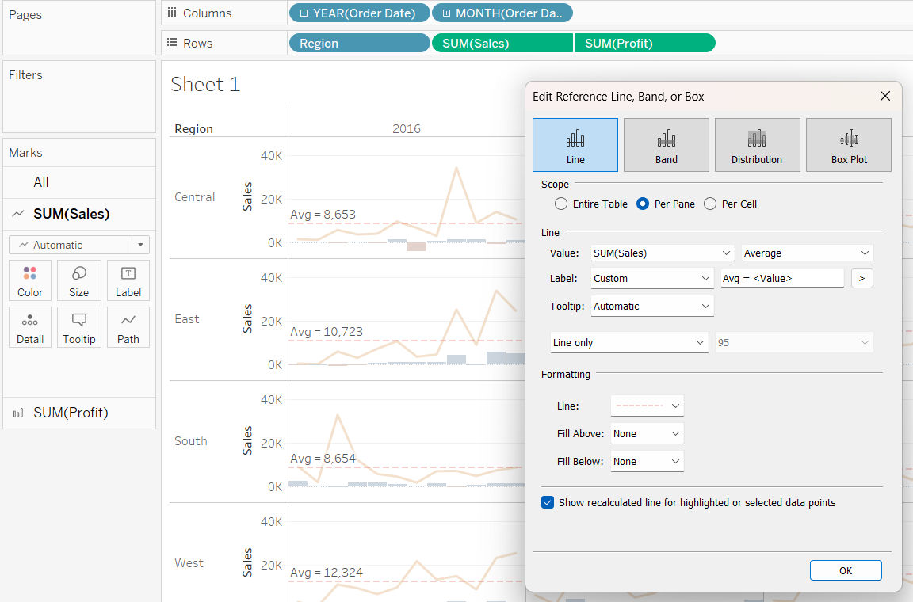
3.2.2 Adjusting Graph Lines
Under the Marks panel, you can select the “Colour” and “Size” for the graph lines.
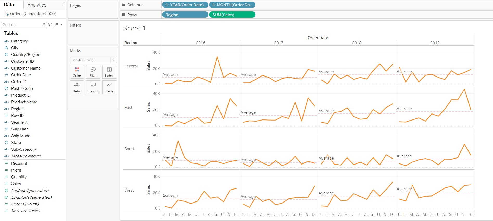
3.2.3 Incorporating Dual Axis Plot
We will demostrate how to incorporate a dual axis plot. First, we drag the “Profits” into the Rows. Notice that graphs for the profits will created in each output pane. Next, we will hover around the profit y-axis, right-click, and select “Dual Axis”.
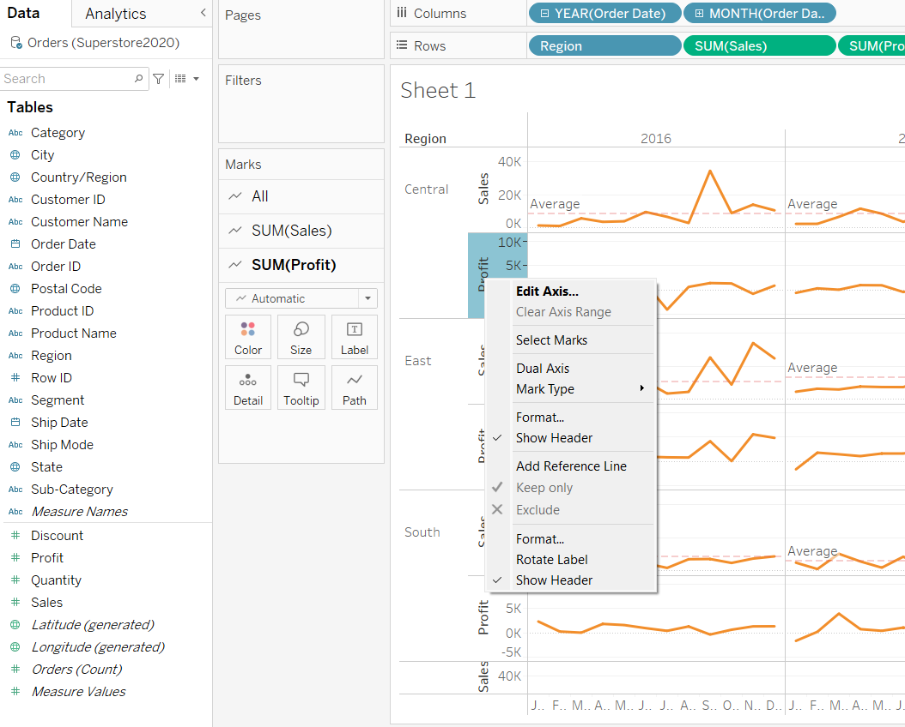
From the graph below, we notice that the scales for “Sum(Sales)” and “Sum(Profits)” are not synchronised. It may be difficult for readers to notice the different scales at first glance.
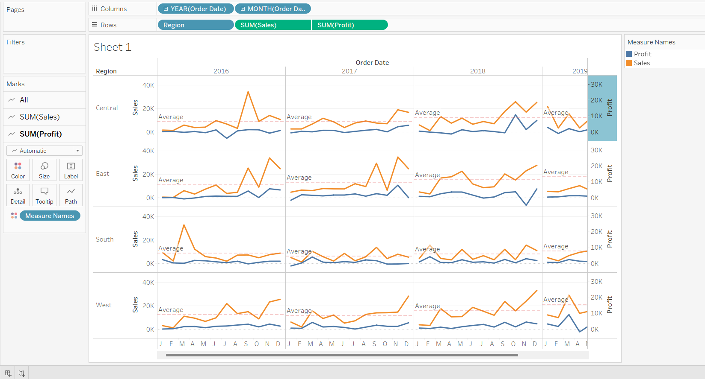Thus we will synchonise the axis by simplying hovering around the “Profit” y-axis, right-click and select “Synchronise Axis”.
3.2.4 Formatting Axis Titles
We observe that the x-axis titles are being cut off, resulting in the first letter being displayed, and the remaining letters reflected as “…”. To overcome this, simply hover over “Month” in columns, right-click and select “Format”. From the “Format” panel that popped out, select how you want the dates to be reflected on the axis.
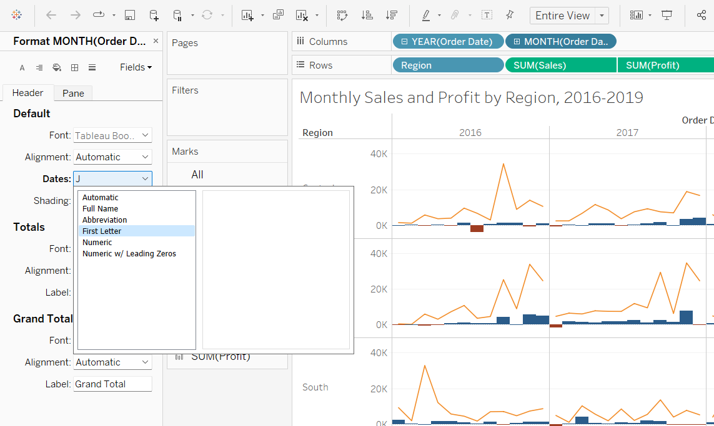
3.2.5 Editing Graph Colours from Ranged to Bi-Polar
First, we will change the graph type of “Profits” from line to bar. Next, we will drag “Sum(Profits)” over to “Color” under the “Marks” panel, selecting 2 for “Stepped Color”.
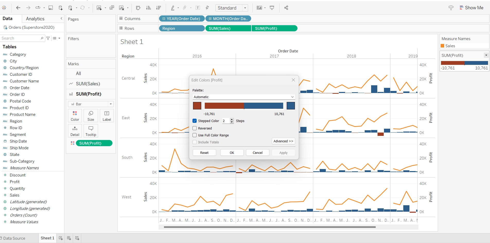
4 Copying Graph Images to PPT
There will be instances when bosses demand data visualisation on powerpoint slides. To achieve this, simply hover over the graph, right-click, select “Copy” and choose the different options of copying.
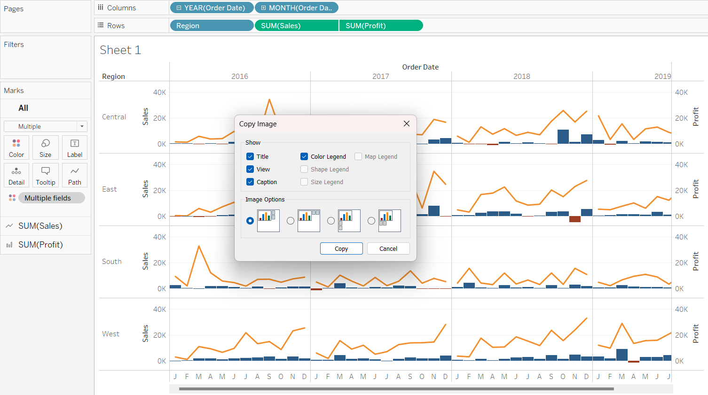
5 Saving to Tableau Public
To publish your work to Tableau Public, simply go to “Server/ Tableau Public/ Save to Tableau Public”. Before that, remember to rename your worksheets and saving your file as a “Tableau Extract” file.
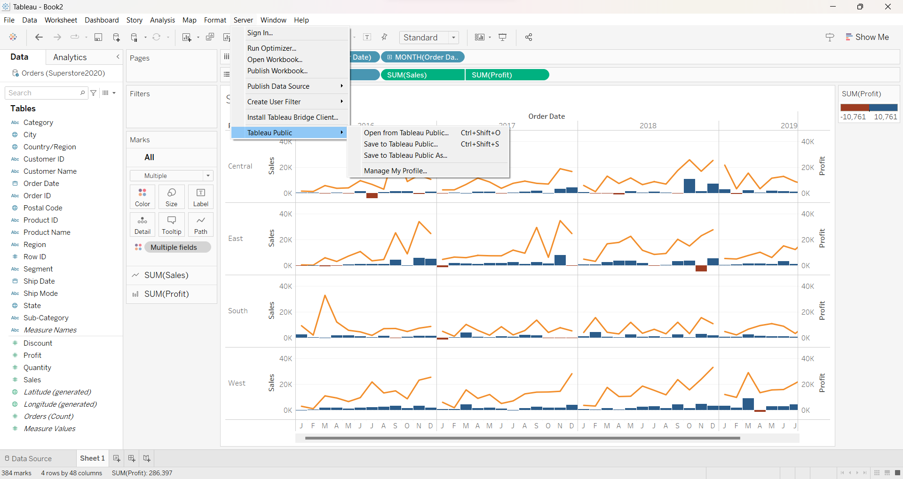
6 References
6.1 Things about Tableau you must know!
6.2 Learning Tableau
Getting Started with Data also self-learn the remaining videos under ’‘’Connecting to Data’’’
Getting Started with Tableau Prep Builder. This is a brand-new product from Tableau designed to help everyone quickly and confidently combine, shape, and clean their data for analysis. You can learn more about Tableau Data Prep here. You are encouraged to view all the 12 videos under ’‘’Tableau Prep’’’.